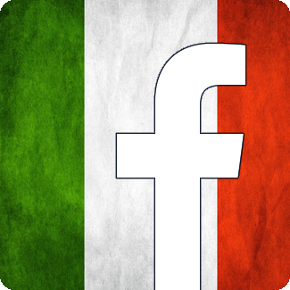
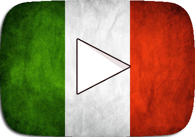
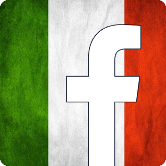
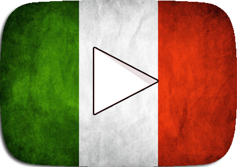
 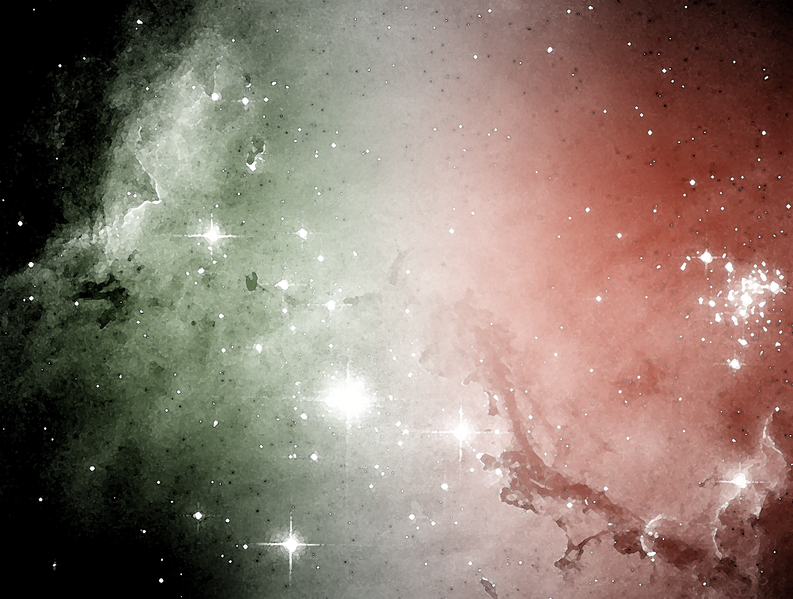
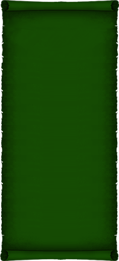
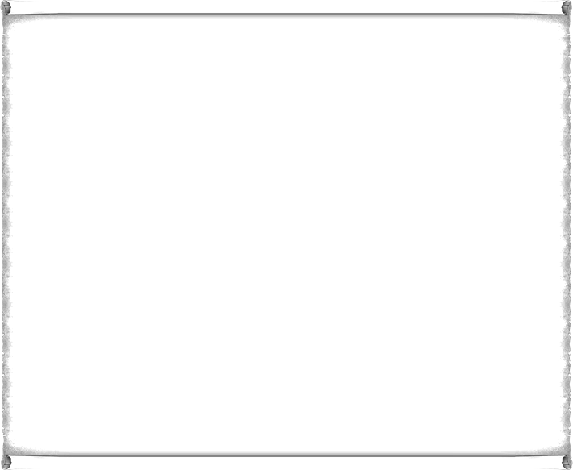
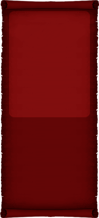
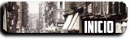
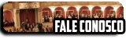
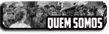
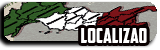
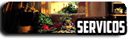
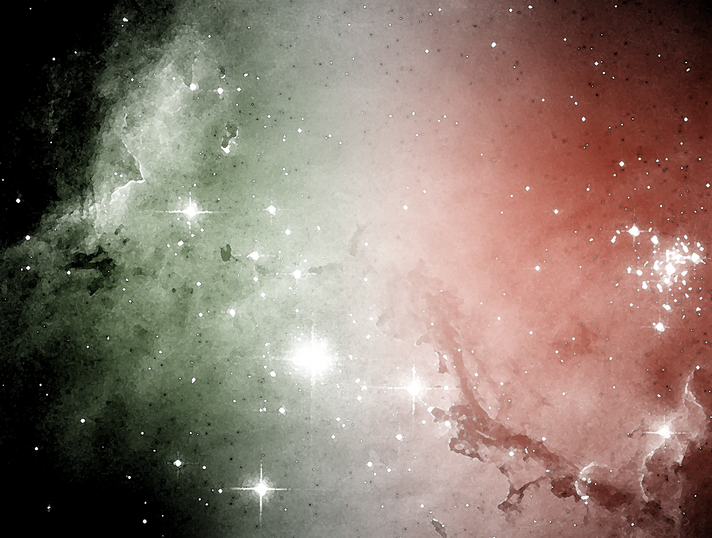
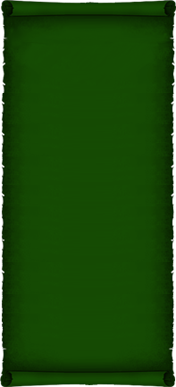
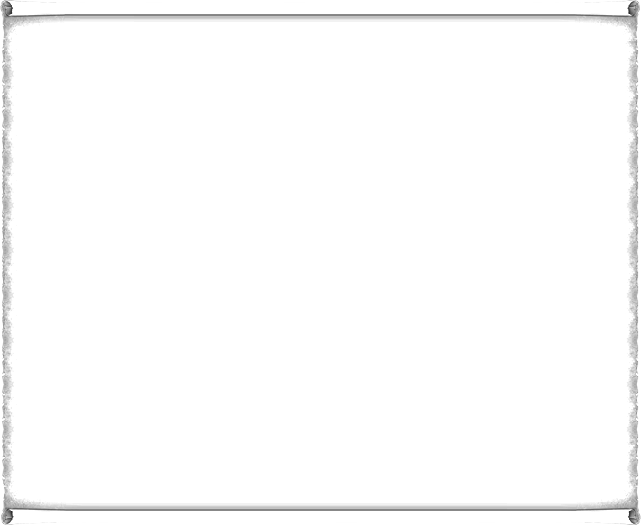
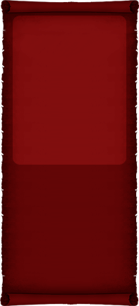
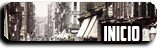
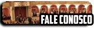
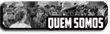
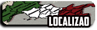
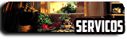
 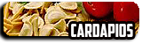
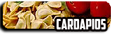
Quem somos
Em 2015,
Lucas Serain, um descendente de Italianos que teve a idéia de trazer o verdadeiro sabor da culinária Italiana para o Brasil. Muitos achavam impossível criar um
restaurante, mas Lucas com muita luta e dedicação correu atrás desse sonho. Após estudar culinária e juntar uma certa quantia de dinheiro, Lucas se estabilizou
no Brasil e trouxe o restannte de sua família para São Paulo.A base de todo homem de sucesso é uma boa família e um bom vinho.
Com a ajuda de seus familiares Lucas inaugurou o restaurante DeSera em 2015, Sera ou Serain é o nome de sua família.
Através da honra, humildade, qualidade e respeito. O DeSera crescerá e esperamos que o seu apetite também!
Sinta-se na Itália com esse site, aperte os cintos, e aproveite a viagem.
Sempre que possível o site será atualizado.
Lucas Serain